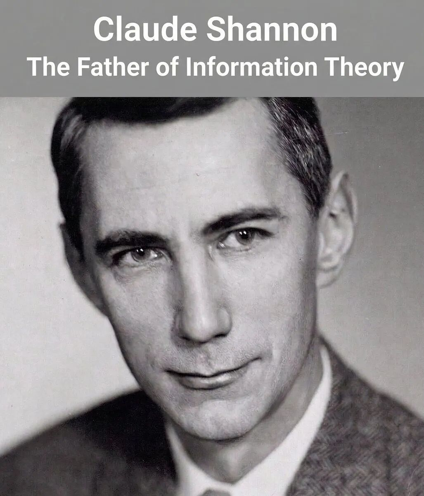
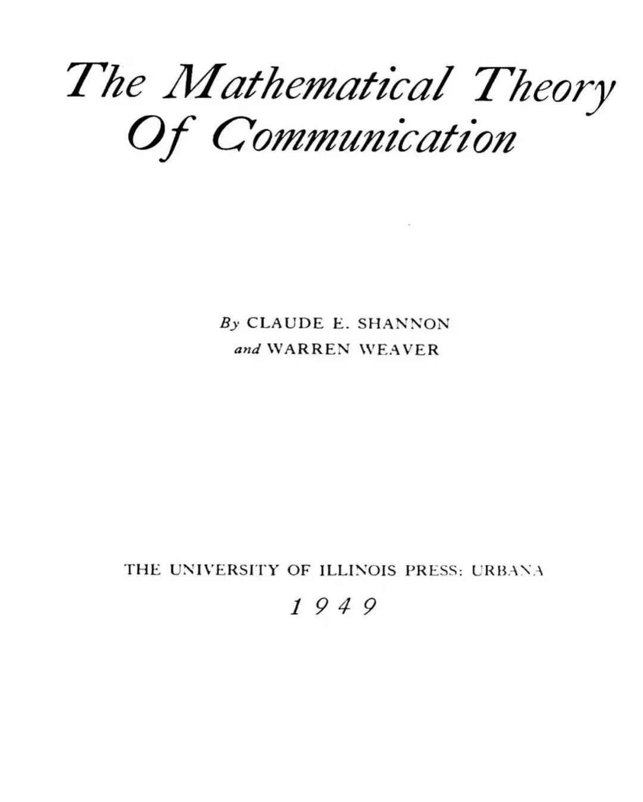
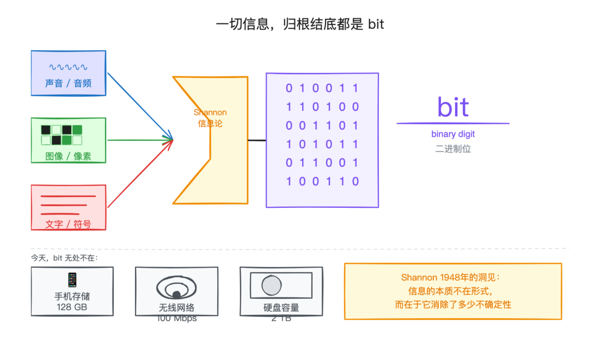
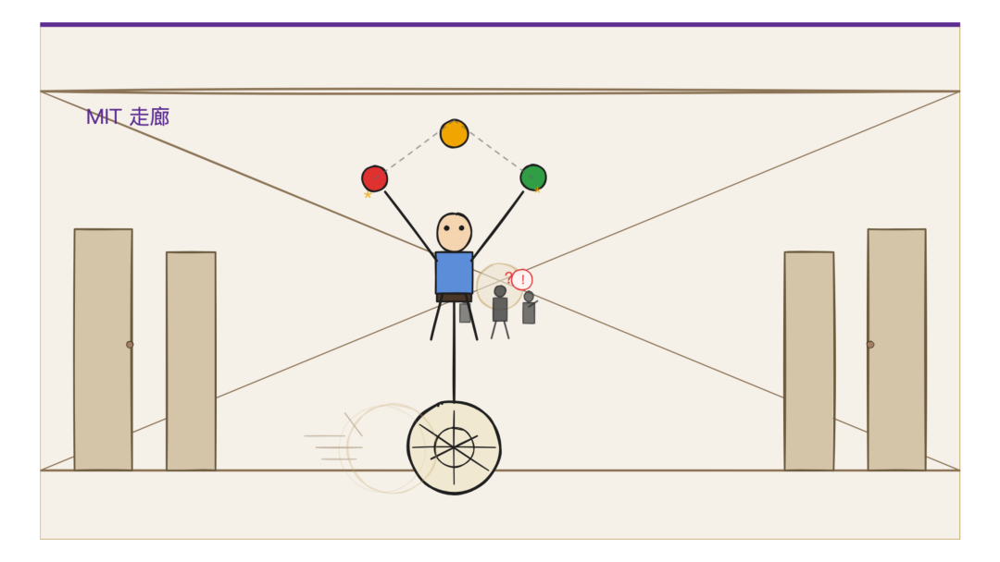
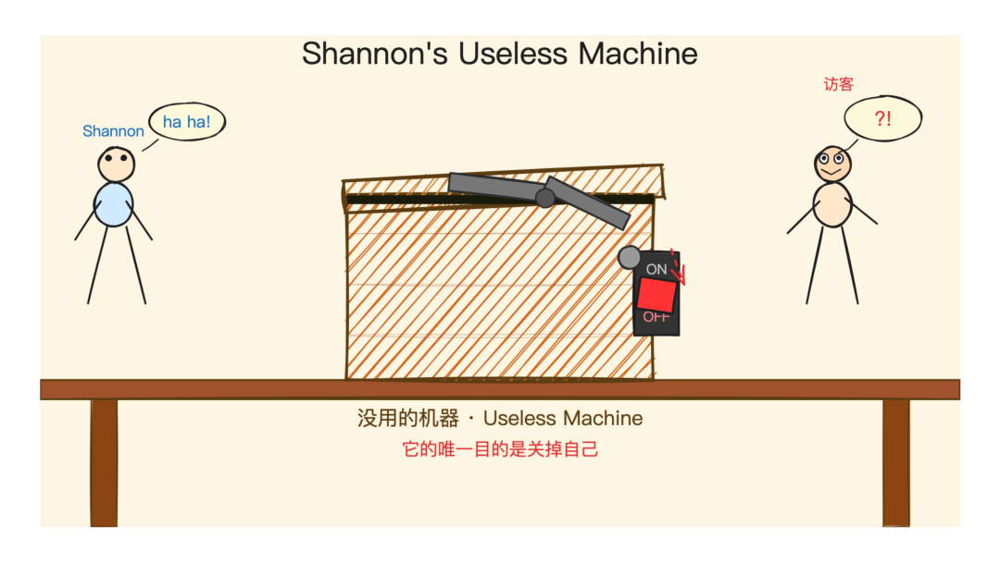
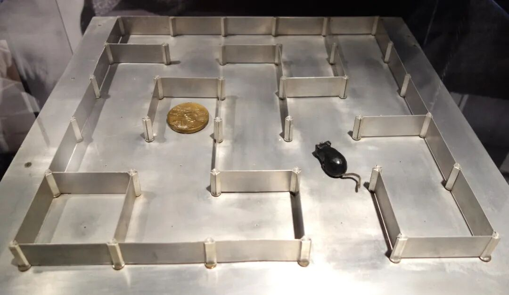
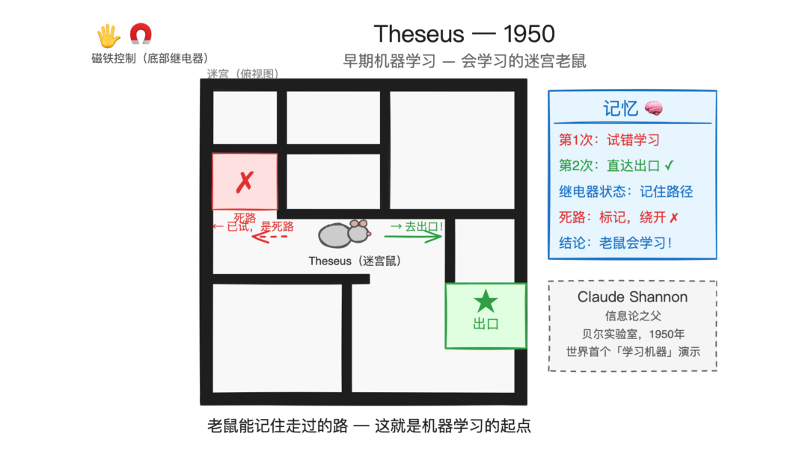
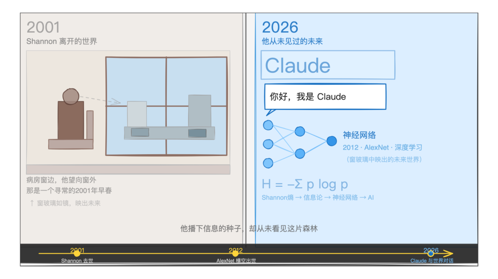

1948 年，一个 32 岁的贝尔实验室工程师发表了一篇论文。

没有人完全看懂它。
工程师们觉得太数学了；数学家们觉得太工程了；一位知名数学家写了差评。
这篇论文叫 A Mathematical Theory of Communication，后来被引用了超过 16 万次，成为人类历史上被引用最多的学术论文之一。

它创造了一个全新的学科：信息论。
而它的作者，叫 Claude Elwood Shannon。
他发明了「比特」一词
Shannon 在那篇论文里做了一件事：证明了所有信息，无论是声音、图像、文字，都可以被量化为 0 和 1 的序列。

他给这个最小单位起了个名字：bit（binary digit，二进制位）。
这个词今天已经无处不在。你的手机有多少 GB，网速是多少 Mbps，硬盘有多大，背后全是这个单位。
在 Shannon 之前，「信息」是一个模糊的概念。在他之后，信息变成了可以精确测量、传输和压缩的东西。
没有这套理论，就没有数据压缩，没有纠错码，没有 Wi-Fi，没有今天神经网络赖以运行的数字基础设施。
顺带一提，「bit」这个词并非 Shannon 独创，是他的同事 John Tukey 在一封内部信里最先用了这个词，Shannon 把它写进了那篇论文，让它流传了下来。
冯·诺依曼给了他一个「阴险」的建议
Shannon 在给这套理论起名字时犯了难。
数学家 John von Neumann（就是发明了现代计算机架构的那位）给他出了个主意：
“ 你应该叫它 entropy（熵）。
理由是：
“ 因为没有人真正理解熵是什么。这样在任何辩论里，你都永远占优势。
Shannon 接受了这个建议。
从此，信息论里的「信息熵」，成了这门学科最核心、也最令人头疼的概念之一。
也可见，取一个好名字的重要性……
MIT 走廊里骑独轮车的人
Shannon 在贝尔实验室待了很多年，后来去了 MIT 当教授。
他的同事和学生都记得一件事：这个人会在 MIT 的走廊里骑独轮车。
有时候还一边骑，一边抛接三个球。

他自己造了一台杂耍机器，能精确计算球在空中的轨迹。
他对杂耍的痴迷程度，不亚于对信息论的研究。他写过一篇杂耍的数学论文，推导出了「杂耍定理」（Shannon's Juggling Theorem）。
他还会骑着独轮车从家里骑到实验室，沿途经过剑桥的街道。
那台「没用的机器」
他造过一台机器，专门用来做一件事：把自己关掉。
这台机器叫 The Ultimate Machine，有时也叫 Useless Machine（没用的机器）。

它就是一个盒子。盒子上有一个开关。
你把开关拨到「开」，盒子里就会伸出一只机械手，把开关拨回「关」，然后缩回去。
盒子重新安静了。
Shannon 自己很喜欢这台机器。他会在来访的客人面前演示。客人们通常要重复拨几次开关才能相信自己看到的东西。
「它的唯一目的，是否定自己的存在。」有人这样评价这台机器。
Shannon 说他只是觉得好玩。
会走迷宫的老鼠
1950 年，Shannon 造了一只电子老鼠，起名叫 Theseus（忒修斯，希腊神话里走出迷宫的英雄）。

Theseus 可以在一个 5×5 的金属迷宫里自主寻找出路。它用磁铁和继电器实现，每次撞到死路就回头重试，直到找到出口。
更关键的是：它会记住走过的路，下一次遇到同样的迷宫时，直接走正确路线，一步不差。

这是最早期的「机器学习」演示之一，远早于这个词被发明。
一切，只因为好玩
Shannon 不是那种「为了改变世界」而工作的人。
他解决问题，因为问题本身有趣。他造杂耍机器，因为杂耍的数学让他着迷。他造无用机器，因为他觉得好笑。他研究象棋程序，因为他喜欢下棋。
他有段时间沉迷于股票投资，赚了不少钱，但他对此的评价是：「这只是另一种有趣的数学游戏。」
1948 年那篇论文发表后，他变得非常著名。学术界开始把「信息论」应用到各种领域：经济学、生物学、语言学、心理学……Shannon 本人对此有些不以为然。
他在 1956 年写了一篇短文，标题是 The Bandwagon（乐队花车），劝大家不要乱用信息论。
“ 把一个成功的理论到处套用，不是科学，是时髦。
之后，他基本停止了正式发表论文。
他不知道的结局
Shannon 晚年患了阿尔茨海默症。他的妻子 Betty 陪伴了他整个晚年。
Betty 本身也是数学家，毕业于新泽西女子学院，在贝尔实验室做过微波研究。那只会走迷宫的电子老鼠 Theseus，实际的接线工作是她完成的。她还给 Shannon 买了他的第一辆独轮车。
2001 年，他去世了，享年 84 岁。
那一年，AI 还是一个大多数人没听过的词。深度学习还要再等 11 年才迎来真正的爆发（2012 年，AlexNet）。Anthropic 还要再等 20 年才创立。
他不知道，有一家公司会用他的名字命名自己最重要的产品。
他不知道，他那套关于信息和概率的理论，会成为大语言模型的数学地基。
他不知道，全世界有数亿人正在用「Claude」这个名字，和一个 AI 对话。

没有他，就没有 Claude
Anthropic 官方从未正式宣布 Claude 的名字来源，但这几乎是公开的秘密。
之前我写过一篇《Anthropic 和 Claude 名字的由来》，里面有写到：
“ Claude 的名字来自 Claude Shannon，信息论之父。Anthropic 用这个名字，是在提醒一件事：大语言模型看起来在「说话」，但底层是一门关于信息和概率的严谨科学。
而且 Shannon 本人就是个「跨界怪才」，他在 MIT 的办公室里骑独轮车、玩杂耍，同时在信息论、密码学、博弈论之间自由穿梭。这种「严肃的玩耍」气质，和 Claude 的人格设计倒是暗暗呼应。
而我大学学信息论的时候，翻来翻去全都是香农的名字：香农熵、香农定理、信道容量……那时的我就已经对这位前辈景仰不已了。
没想到多年后，他的名字，会出现在一个 AI 身上。
可以说：
没有 Shannon 的那篇论文，就没有数字通信，就没有互联网，就没有 GPU 里跑的神经网络，就没有大语言模型。
没有这位骑独轮车、造没用机器、教电子老鼠走迷宫的怪人，就没有 Claude。
如果没有这位男人，你现在读到这篇文章的屏幕，也许，
根本就不会存在。
◇ ◆ ◇
相关链接：
• A Mathematical Theory of Communication（1948 年原版论文）: https://archive.org/details/bstj27-3-379
• Claude Shannon — Wikipedia: https://en.wikipedia.org/wiki/Claude_Shannon
• How Claude Shannon Invented the Future — Quanta Magazine: https://www.quantamagazine.org/how-claude-shannons-information-theory-invented-the-future-20201222/
• Claude Shannon: Tinkerer, Prankster — IEEE Spectrum: https://spectrum.ieee.org/claude-shannon-tinkerer-prankster-and-father-of-information-theory
• A Mind at Play（2017 年传记）: https://www.simonandschuster.com/books/A-Mind-at-Play/Jimmy-Soni/9781476766690
• Shannon is dead at 84 — MIT News: https://news.mit.edu/2001/obitshannon-0228